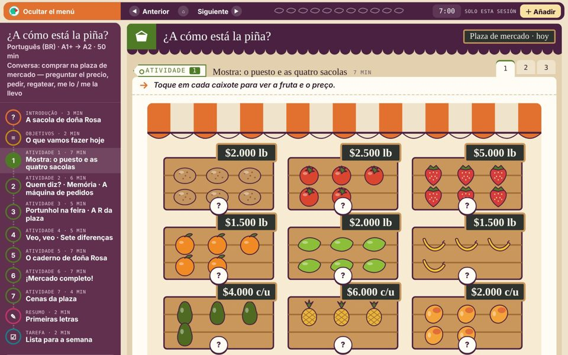
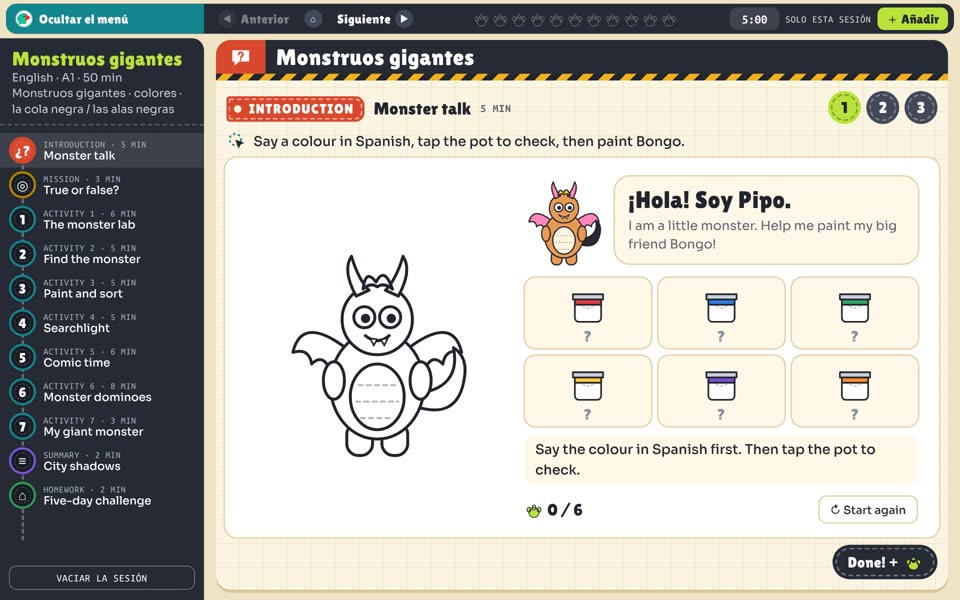

para profes de español, inglés y portugués
La clase de mañana ya está lista.
Abres un tablero, compartes un enlace y empieza la clase: 50 minutos con actividades, un juego y la tarea. Tú te quedas con lo mejor del oficio, que es conversar con tu estudiante.



tocas la foto ysale la palabra cada actividad
trae sus minutos
Así se vive una clase con un tablero
cinco minutos antes
Eliges el tablero
Buscas por tema, por nivel o por el idioma de tu estudiante. No hay nada que imprimir ni que armar.
durante la clase
Tu estudiante participa
Vota, ordena frases y destapa palabras desde su pantalla. Tú conduces y ves cada respuesta en el momento.
al despedirse
La tarea ya está escrita
Cada tablero cierra con una misión corta para la semana, como una nota de voz de menos de un minuto.
clase en vivo
Tú conduces. Tu estudiante responde.
Abres una sala, pegas el enlace en el chat y tu estudiante entra sin crear cuenta. Cuando tú avanzas, su pantalla avanza contigo.
Entrar y abrir una salaCada tablero es un lugar
En vez de una lista de ejercicios, una escena: tu estudiante habla porque tiene algo que resolver ahí.


- Español, del A1 al B2
- Inglés, en preparación
- Portugués, en preparación
Hice estos tableros para mis propias clases.
Soy profe de idiomas y sé lo que es llegar a clase con el tiempo justo. Cada tablero nació de una clase real, con un estudiante real, y lo fui puliendo hasta que la hora pasara conversando.
Ahora están aquí para que tú también llegues con la clase lista.
Arley
Profe de español, inglés y portugués